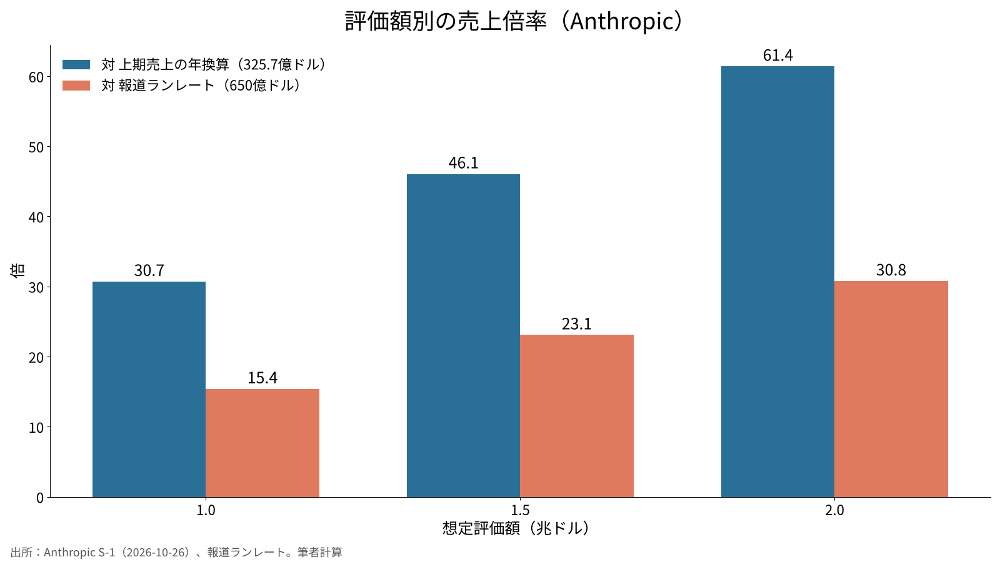
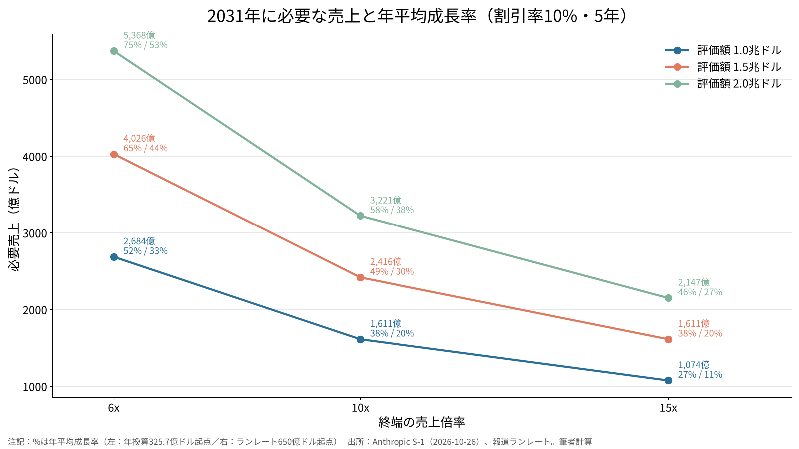

AnthropicとOpenAIの上場は成功するか――企業価値とソフトバンクグループへの影響を数字で検証する
2026年10月26日、AnthropicがSEC（米証券取引委員会）にS-1（上場届出書）を公開提出し、ナスダックでの上場手続きが具体的に動き始めた。
本稿の問いは「評価額1.5兆〜2.0兆ドルは、どれだけの売上成長を前提にしているか。そしてOpenAIの評価額が上下したとき、ソフトバンクグループの純資産価値はどれだけ動くか」である。
上場の「成功」を初値ではなく、数年後の株価が上場時の評価を正当化できるかという意味で定義し、一次資料と学術データから確かめる。

問いと背景
Anthropicが提出したS-1によれば、上場先はナスダック・グローバル・セレクト市場、ティッカーは「ANT」である[1]。提出時点では公開価格の仮条件は空欄で、主幹事にはゴールドマン・サックスとモルガン・スタンレーが並び、みずほとMUFGの米国証券子会社も引受団に入っている[1]。報道では調達額は1,000億ドル超、評価額は1.5兆〜2.0兆ドル、上場は11月中旬が想定されている[7][8]。
一方のOpenAIは、2026年3月に1,220億ドルを調達し、ポストマネー評価額は8,520億ドルとされる[9]。2026年6月には上場に向けた書類をSECへ非公開で提出したと報じられたが[10]、9月にはアルトマンCEOが年内の上場を否定し、約1.4兆ドルの評価額で300億ドル以上のつなぎ資金を調達する協議に入ったと伝えられている[11]。
日本の投資家にとって見逃せないのは、ソフトバンクグループ（SBG）がOpenAIの約13%を保有している点だ。SBGは2026年2月に300億ドルの追加出資を決め、払込完了後の持分は約13%、累計出資額は646億ドルになると開示している[2]。2025年12月の時点では累計300億ドルで、持分は約11%だった[3]。
データと方法
使った数値と計算は次の通りである。すべてdata.jsonに保存した。
第一に、Anthropicの売上はS-1の数値を使う。2026年上期（1〜6月）の売上は162.86億ドル、前年同期は11.63億ドル、2025年通期は45.85億ドルである[1]。上期の売上を2倍した「年換算売上」は325.7億ドルとなる。これとは別に、報道では7月末時点の年換算売上（ランレート）が650億ドルを超えたとされる[12]。直近の勢いを映すのは後者だが、監査済みの数値ではない。そこで両方を起点にして計算した。
第二に、売上倍率は「評価額÷売上」で求めた。
第三に、評価額を正当化するのに必要な売上を逆算した。5年後（2031年）の企業価値が、評価額を年10%で複利運用した額と等しくなると置く。必要売上＝評価額×1.1^5÷終端の売上倍率、必要な年平均成長率＝（必要売上÷起点売上）^(1/5)−1 である。年10%は株式の期待収益率としての仮置きで、感度分析で8%と12%も試した。
第四に、SBGへの影響は「13%×OpenAI評価額」をSBGの純資産価値（NAV）と時価総額で割った。NAVは72.30兆円、株価は5,963円、自己株式を除く発行済株式数は約56.99億株で、いずれも2026年6月末の値である[4]。時価総額はこれらを掛けて約33.98兆円と計算し、1ドル＝158.10円でドルに換算した。
第五に、上場後の株価の傾向は、フロリダ大学のジェイ・リッター教授が公開している米国IPOの統計で確かめた[5][6]。
結果
Anthropicの売上倍率は次の通りである。
| 想定評価額 | 対 年換算売上（325.7億ドル） | 対 ランレート（650億ドル） |
|---|---|---|
| 1.0兆ドル | 30.7倍 | 15.4倍 |
| 1.5兆ドル | 46.1倍 | 23.1倍 |
| 2.0兆ドル | 61.4倍 | 30.8倍 |

S-1の損益は、見出しの数字だけでは誤解しやすい。2026年上期の純損失は807.48億ドルだが、このうち723.88億ドルは転換社債などの公正価値の変動による評価損で、現金は出ていない[1]。営業損失は6.93億ドルにとどまり、会社が示す調整後の営業利益は16.18億ドルの黒字だった[1]。6月末の現金と短期投資は1,316.51億ドルある[1]。ただし、AIインフラへの設備投資（報道では上期90億ドル）や、約4,300億ドルとされるクラウドの利用契約は今後の重い固定費になる[7][8]。リスク要因の記載も26ページから119ページまで続いている[1]。
SBGへの影響は次の通りである。
| OpenAI評価額 | SBG持分13%の価値 | 累計出資646億ドルに対する倍率 | NAV比 | 時価総額比 |
|---|---|---|---|---|
| 0.6兆ドル | 780億ドル（12.33兆円） | 1.21倍 | 17% | 36% |
| 0.852兆ドル | 1,108億ドル（17.51兆円） | 1.71倍 | 24% | 52% |
| 1.0兆ドル | 1,300億ドル（20.55兆円） | 2.01倍 | 28% | 60% |
| 1.4兆ドル | 1,820億ドル（28.77兆円） | 2.82倍 | 40% | 85% |
| 2.0兆ドル | 2,600億ドル（41.11兆円） | 4.02倍 | 57% | 121% |
OpenAIの評価額が1兆ドルから1.4兆ドルに変わると、SBGの持分価値は約8.2兆円増え、これはNAVの11%強に当たる。逆に0.6兆ドルまで下がれば、2026年3月の評価額と比べて約5.2兆円減る計算になる。
感度分析
評価額、終端の売上倍率、割引率、起点となる売上の4つを動かした。
| 評価額 | 終端倍率 | 割引率 | 2031年の必要売上 | 必要成長率（年換算起点） | 必要成長率（ランレート起点） |
|---|---|---|---|---|---|
| 1.0兆ドル | 6倍 | 10% | 2,684億ドル | 52% | 33% |
| 1.0兆ドル | 10倍 | 10% | 1,611億ドル | 38% | 20% |
| 1.0兆ドル | 15倍 | 10% | 1,074億ドル | 27% | 11% |
| 1.5兆ドル | 6倍 | 10% | 4,026億ドル | 65% | 44% |
| 1.5兆ドル | 10倍 | 10% | 2,416億ドル | 49% | 30% |
| 1.5兆ドル | 15倍 | 10% | 1,611億ドル | 38% | 20% |
| 2.0兆ドル | 6倍 | 10% | 5,368億ドル | 75% | 53% |
| 2.0兆ドル | 10倍 | 10% | 3,221億ドル | 58% | 38% |
| 2.0兆ドル | 15倍 | 10% | 2,147億ドル | 46% | 27% |
| 1.5兆ドル | 10倍 | 8% | 2,204億ドル | 47% | 28% |
| 1.5兆ドル | 10倍 | 12% | 2,644億ドル | 52% | 32% |

中央のケース（評価額1.5兆ドル、終端10倍、割引率10%）では、2031年に約2,400億ドルの売上が必要になる。ランレートを起点にすれば年30%、上期の年換算を起点にすれば年49%の成長を5年続ける計算だ。結果を最も大きく左右するのは終端倍率で、6倍と15倍では必要売上が2.5倍違う。割引率を2ポイント動かしても、必要成長率は2〜3ポイントしか変わらない。
考察
上場が「成功するか」は、二つに分けて考える必要がある。
一つ目は、上場初日の値動きだ。リッターのデータでは、1980〜2025年の米国IPOの初日の平均上昇率は19.0%、2025年は29.3%だった[5]。需要が強ければ、初日は上昇しやすい環境にある。
二つ目は、上場後の数年間の成績だ。1980〜2024年に上場した9,253社の3年間の平均リターンは19.1%だったが、市場平均と比べると20.5ポイント下回っている[6]。売上10億ドル以上の大型IPOでは市場との差がマイナス2.1ポイントと小さく、売上1億ドル以上のテック企業ではプラス13.7ポイントと市場を上回った[6]。Anthropicの規模は後者に近い。ただ、過去のデータに売上325億ドル級で上場した例はほとんどなく、そのまま当てはめることはできない。
反対の見方もある。AIの需要は景気や電力の制約に左右されやすく、モデルの性能差が縮まれば価格競争が起きる。その場合、終端倍率は6倍に近づいてもおかしくない。そうなると、評価額2.0兆ドルを正当化するにはランレートを起点にしても年53%の成長が5年間必要で、上場時の価格は割高だったことになる。上場の成功が「失敗」に変わる道筋は、この表の左上にある。
OpenAIについて言えば、Anthropicが上場して株価が付くことで、比較の物差しができる。Anthropicの株価が公開後に高い倍率を保てば、OpenAIの1.4兆ドルという評価にも根拠が増える。逆に大きく下がれば、OpenAIの資金調達の条件も厳しくなる可能性がある。SBGにとっては、この連動が最大の変数だ。SBGはOpenAIへの出資のために400億ドルのブリッジローンを組み、7月にも100億ドルを追加で借りている[4]。6月末の借入比率（LTV）は13.0%と低いが[4]、資産の集中度は上がっている。
データの限界も書いておく。ランレート、設備投資額、クラウド契約額は報道ベースで、S-1の該当箇所は筆者が確認した版では空欄だった[1]。OpenAIの売上は監査済みの開示がない。SBGの時価総額は6月末の株価で計算しており、足元の値とは異なる。
結論を変えうる材料は三つある。S-1の修正版で示される公開価格の仮条件、上場後最初の四半期の売上成長率、そしてOpenAIの次の資金調達の評価額である。
結論
Anthropicの上場は、初日の値動きという意味では需要に支えられる可能性がある。しかし数年単位で見た「成功」には、評価額1.5兆ドルの場合でも、ランレート起点で年30%前後の成長を5年続け、終端で売上の10倍の評価を維持することが前提になる。これは不可能な数字ではないが、余裕のある数字でもない。SBGにとっては、OpenAIの評価額が4,000億ドル動くごとに、NAVが約11%動く構造になっている。上場の成否は、AI企業2社だけでなく、日本の投資家が保有する資産の値動きにも直接つながっている。
僕はこう見ている
僕は、この企業価値をまだ安いと見ている。1.5兆ドルでも2兆ドルでも、四半期の利益で選んでいない会社の値段としては、高すぎるとは感じていない。
2社の上場がどちらもうまくいけば、ソフトバンクグループの株は大きく上がると思う。上の計算どおり、OpenAIの評価額が動けばNAVが大きく動く構造だからだ。ただ、僕はソフトバンクの株を1株も持っていない。お金は自分で選んだAI企業に置いている。
Anthropicは、上場の初日に1,000万円ほどを株式市場で買うつもりでいる。目論見書でまず見るのは売上・利益・時価総額の3つで、何が書いてあっても、買うのをやめる理由にはしないと決めている。
上の感度分析が示すように、成功の条件は余裕のある数字ではない。それでも僕は、数年ではなく、長く持つ前提で入る。
出典
- Anthropic, PBC「Form S-1 Registration Statement」2026-10-26 https://www.sec.gov/Archives/edgar/data/0002130357/000162828026067168/anthropicpbc-sx1.htm
- ソフトバンクグループ「Follow-on Investments in OpenAI」2026-02-27 https://group.softbank/en/news/press/20260227
- ソフトバンクグループ「Completion of Additional $22.5 Billion Investment in OpenAI」2025-12-31 https://group.softbank/en/news/press/20251231
- ソフトバンクグループ「決算データシート 2026年度第1四半期」2026-08-06 https://group.softbank/media/Project/sbg/sbg/pdf/ir/presentations/2026/earnings-datasheet_q1fy2026_02.pdf
- Jay R. Ritter（University of Florida）「Initial Public Offerings: Updated Statistics」2026-10-05 https://site.warrington.ufl.edu/ritter/files/IPO-Statistics.pdf
- Jay R. Ritter（University of Florida）「Initial Public Offerings: Updated Long-run Statistics」2026-10-05 https://site.warrington.ufl.edu/ritter/files/IPOs-long-run-returns-on-IPOs.pdf
- 共同通信（OANDA証券掲載）「Anthropic、米SECに上場申請書を公開提出」2026-10-26 https://www.oanda.jp/lab-education/market_news/kn_2026102601001646/
- Yahoo Finance「Anthropic publicly files IPO prospectus, noting strong revenue growth and massive spending」2026-10-26 https://finance.yahoo.com/technology/article/anthropic-publicly-files-ipo-prospectus-noting-strong-revenue-growth-and-massive-spending-131807138.html
- Quartz「OpenAI funding round valuation」2026-04-01 https://qz.com/openai-funding-round-valuation-ipo-chatgpt
- Bloomberg Government「OpenAI Files Confidentially for IPO as Rivals Compete for Cash」2026-06-09 https://news.bgov.com/ip-law/openai-filed-confidentially-for-ipo-as-rivals-race-to-market
- DealStreetAsia（Reuters）「OpenAI targets $30b bridge financing at $1.4 trillion valuation」2026-09-30 https://www.dealstreetasia.com/stories/openai-funding-2-496629
- Axios「Anthropic's revenue run rate reportedly surpasses $65 billion pre-IPO」2026-08-17 https://axios.com/2026/08/17/anthropic-revenue-run-rate-ipo-openai
写真：Maxim Hopman（Unsplash）。図はYUKI CAPITALが作成
日々の数字と判断は、Xで記録している。